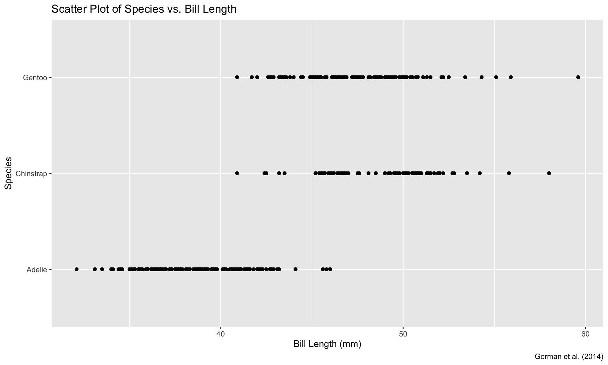
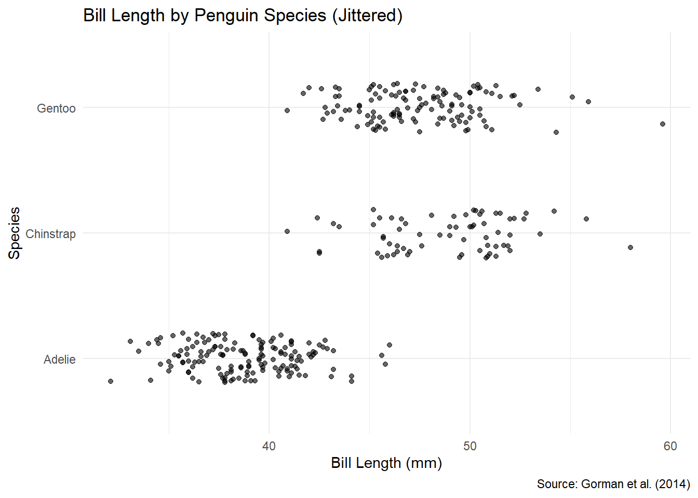
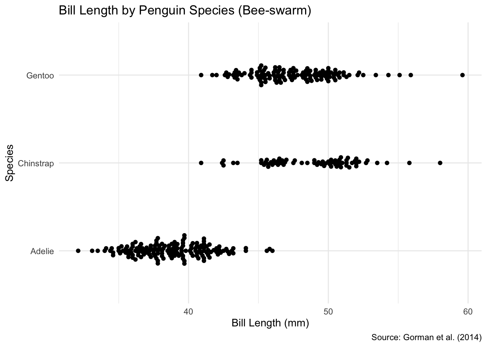
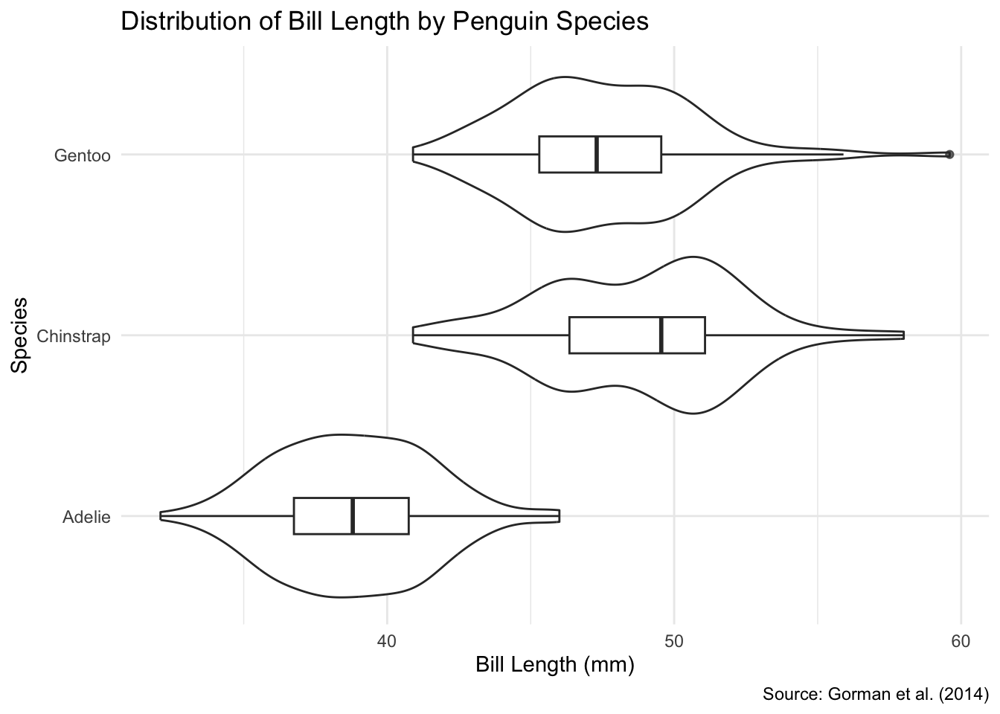
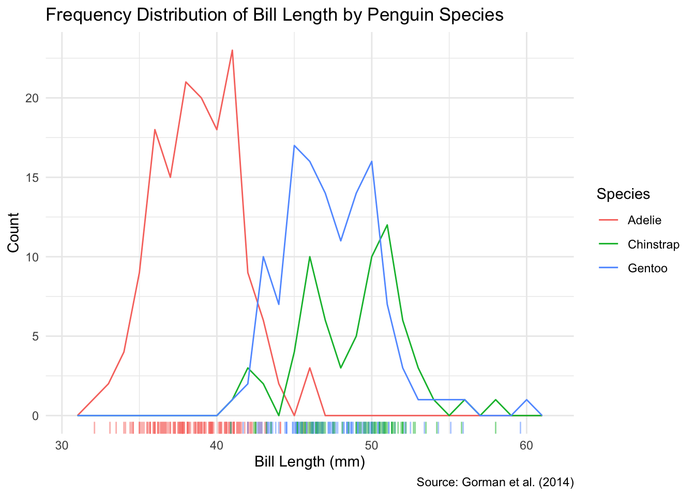
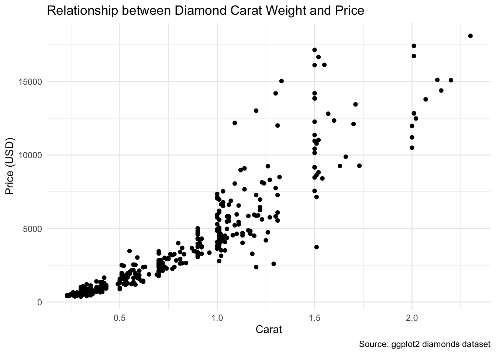
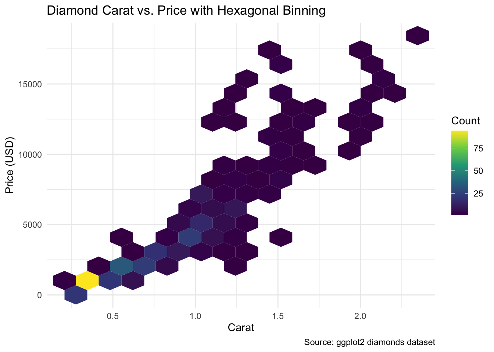
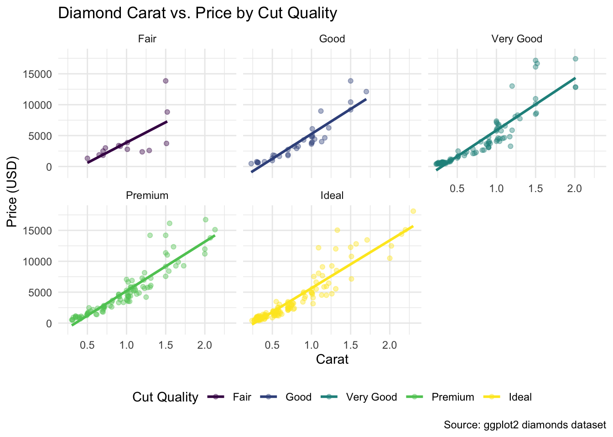

# Load necessary packages
library(tidyverse)
library(palmerpenguins)
library(ggbeeswarm)
library(ggplot2)
library(hexbin)Week 3 Lab: Exploring ggplot2
data("penguins", package = "palmerpenguins")Visualizing the Distribution of Quantitative Data: Bill Lengths of Pygoscelis Penguins
1.1 Remove Missing Values
penguins_clean <- drop_na(penguins, bill_length_mm)
# Check how many rows were removed
cat("Original dataset size:", nrow(penguins), "\n")Original dataset size: 344 cat("Clean dataset size:", nrow(penguins_clean), "\n")Clean dataset size: 342 cat("Number of rows removed:", nrow(penguins) - nrow(penguins_clean))Number of rows removed: 21.2 Scatter Plot of Species versus Bill Length

1.3 Why Should You Jitter the Plot?
# Count occurrences of each bill length within each species
bill_length_counts <- penguins_clean |>
group_by(species, bill_length_mm) |>
summarise(count = n(), .groups = "drop") |>
filter(count > 1) |>
arrange(desc(count))
# Display cases where multiple penguins have the same bill length within a species
print(bill_length_counts)# A tibble: 84 × 3
species bill_length_mm count
<fct> <dbl> <int>
1 Adelie 41.1 7
2 Adelie 37.8 5
3 Adelie 39.6 5
4 Adelie 36 4
5 Adelie 38.1 4
6 Adelie 39.7 4
7 Adelie 40.6 4
8 Gentoo 45.2 4
9 Gentoo 45.5 4
10 Gentoo 46.2 4
# ℹ 74 more rows# Count how many points would overlap in our plot
overlapping_points <- sum(bill_length_counts$count)
total_points <- nrow(penguins_clean)
overlap_percentage <- overlapping_points / total_points * 100
cat("Number of overlapping points:", overlapping_points, "\n")Number of overlapping points: 218 cat("Percentage of dataset with overlapping points:", round(overlap_percentage, 2), "%")Percentage of dataset with overlapping points: 63.74 %The table above shows instances where multiple penguins of the same species have identical bill lengths. This would result in overlapping points on our scatter plot, making it difficult to see the true distribution of the data. This is why jittering the plot would be beneficial - it adds a small amount of random noise to the position of each point to prevent overlap.
1.4 Jitter Plot
ggplot(penguins_clean, aes(x = bill_length_mm, y = species)) +
geom_jitter(alpha = 0.6, width = 0, height = 0.2) +
labs(
title = "Bill Length by Penguin Species (Jittered)",
x = "Bill Length (mm)",
y = "Species",
caption = "Source: Gorman et al. (2014)"
) +
theme_minimal()
1.5 Bee-Swarm Plot
ggplot(penguins_clean, aes(x = bill_length_mm, y = species)) +
geom_beeswarm() +
labs(
title = "Bill Length by Penguin Species (Bee-swarm)",
x = "Bill Length (mm)",
y = "Species",
caption = "Source: Gorman et al. (2014)"
) +
theme_minimal()
1.6 Pros and Cons of Bee-Swarm Plots
Advantage of bee-swarm plot:
Unlike jitter plots where points are randomly displaced, bee-swarm plots position points in a deterministic way that prevents overlapping. This allows viewers to see each individual data point while still maintaining the accurate distribution of bill lengths along the x-axis. The density of points at any given x-value directly represents the frequency of that value.Disadvantage of bee-swarm plot:
Bee-swarm plots can take up more vertical space than jitter plots when there are many overlapping values, which can make them less space-efficient. Additionally, for very large datasets, bee-swarm plots might become visually cluttered and computationally intensive to render.
1.7 Violin Plot with Boxes
ggplot(penguins_clean, aes(x = bill_length_mm, y = species)) +
geom_violin() +
geom_boxplot(width = 0.2, fill = "white", alpha = 0.7) +
labs(
title = "Distribution of Bill Length by Penguin Species",
x = "Bill Length (mm)",
y = "Species",
caption = "Source: Gorman et al. (2014)"
) +
theme_minimal()
1.8 What Does a Violin Plot Add to a Box Plot?
A violin plot provides additional information that is not directly visible in a box plot:
- The violin plot shows the full probability density of the data across all values, revealing nuances in the distribution such as bimodality, skewness, or multiple peaks that are not visible in a box plot.
- While a box plot only shows five summary statistics (minimum, first quartile, median, third quartile, maximum), the violin plot shows the density estimate at every point along the range of values, giving a more complete picture of where data points are concentrated.
- The width of the violin at any given point represents the density of data at that value, making it easier to visualize exactly where most observations cluster, which cannot be determined from a box plot alone.
1.9 Frequency Polygons with Rug Plot
ggplot(penguins_clean, aes(x = bill_length_mm, color = species)) +
geom_freqpoly(binwidth = 1) +
geom_rug(alpha = 0.5) +
labs(
title = "Frequency Distribution of Bill Length by Penguin Species",
x = "Bill Length (mm)",
y = "Count",
color = "Species",
caption = "Source: Gorman et al. (2014)"
) +
theme_minimal()
1.10 Faceted Frequency Polygons with Rug Plots
ggplot(penguins_clean, aes(x = bill_length_mm)) +
geom_freqpoly(binwidth = 1) +
geom_rug(alpha = 0.7) +
facet_wrap(~ species, ncol = 1) +
labs(
title = "Frequency Distribution of Bill Length by Penguin Species",
x = "Bill Length (mm)",
y = "Count",
caption = "Source: Gorman et al. (2014)"
) +
theme_minimal()1.11 Pros and Cons of Faceting
Strength of faceted plot:
Each species is displayed in its own panel with its own y-axis scale, which makes it easier to see the distribution within each species independently. This is particularly valuable when the counts or frequencies differ substantially between groups, as the shape of the distribution for species with fewer observations is not visually dominated by species with more observations.Weakness of faceted plot:
Direct comparison between species is more difficult in the faceted plot because they’re in separate panels with different scales. In the non-faceted plot (1.9), it’s easier to immediately see how the distributions overlap and compare their positions relative to each other on the x-axis. Additionally, faceting takes up more space on the page, which can be inefficient for simple comparisons.
1.12 Unmarked Bonus Question: Pairwise ùë°-Test
penguins_clean %>%
group_by(species) %>%
summarise(mean_bill = mean(bill_length_mm, na.rm = TRUE))# A tibble: 3 × 2
species mean_bill
<fct> <dbl>
1 Adelie 38.8
2 Chinstrap 48.8
3 Gentoo 47.5pairwise.t.test(penguins_clean$bill_length_mm, penguins_clean$species)
Pairwise comparisons using t tests with pooled SD
data: penguins_clean$bill_length_mm and penguins_clean$species
Adelie Chinstrap
Chinstrap <2e-16 -
Gentoo <2e-16 0.0032
P value adjustment method: holm 2 Find a Data Set to Demonstrate Mitigation of Overplotting
Use the “Diamonds” dataset included in the ggplot2 package.
This dataset contains prices and attributes of approximately 54,000 diamonds.
Create a subset that meets the required conditions.
# Load the diamonds dataset (included in ggplot2)
data(diamonds)
# Create a meaningful subset with 400 observations
set.seed(123) # For reproducibility
diamonds_subset <- diamonds |>
slice_sample(n = 400)
# Display the first few rows
head(diamonds_subset)# A tibble: 6 × 10
carat cut color clarity depth table price x y z
<dbl> <ord> <ord> <ord> <dbl> <dbl> <int> <dbl> <dbl> <dbl>
1 0.73 Ideal I VS1 60.7 56 2397 5.85 5.81 3.54
2 0.7 Ideal G VS1 60.8 56 3300 5.73 5.8 3.51
3 0.31 Ideal D VS1 61.6 55 713 4.3 4.33 2.66
4 0.31 Ideal H VVS1 62.2 56 707 4.34 4.37 2.71
5 0.31 Ideal E IF 60.9 55 987 4.39 4.41 2.68
6 0.83 Good E SI1 63.7 59 3250 5.95 5.89 3.772.1 Data Source and Description
The diamonds dataset comes from the ggplot2 package and is a built-in dataset in R. It contains information about diamonds, including their carat weight, cut quality, color, clarity, price, and physical dimensions (depth, table, x, y, z). This dataset is particularly useful for examining relationships between diamond attributes and prices.
2.2 Validation of Conditions
# Condition C: Between 20 and 500 observations
cat("Number of observations:", nrow(diamonds_subset), "\n")Number of observations: 400 # Condition D: At least two quantitative variables
cat("Quantitative variables: carat, price, depth, table, x, y, z\n")Quantitative variables: carat, price, depth, table, x, y, z# Condition E: At least one pair of data points with identical values
# Check for duplicate values in the carat and price columns
duplicate_points <- diamonds_subset |>
group_by(carat, price) |>
filter(n() > 1) |>
ungroup()
cat("Number of duplicate points:", nrow(duplicate_points), "\n")Number of duplicate points: 33 # If no duplicates are found in carat and price, check other combinations
if (nrow(duplicate_points) == 0) {
duplicate_points <- diamonds_subset |>
group_by(depth, table) |>
filter(n() > 1) |>
ungroup()
cat("Number of duplicate points (depth & table):", nrow(duplicate_points), "\n")
}
if (nrow(duplicate_points) > 0) {
cat("Sample of duplicate points:\n")
print(head(duplicate_points))
}Sample of duplicate points:
# A tibble: 6 × 10
carat cut color clarity depth table price x y z
<dbl> <ord> <ord> <ord> <dbl> <dbl> <int> <dbl> <dbl> <dbl>
1 0.32 Ideal D VS2 62.2 55 758 4.37 4.41 2.73
2 0.31 Ideal D VS2 61.5 56 734 4.37 4.41 2.7
3 0.31 Good E SI1 63.9 56 698 4.31 4.27 2.74
4 0.35 Ideal G IF 62.3 55 1116 4.52 4.5 2.81
5 0.34 Ideal G VS2 62 54 596 4.47 4.5 2.78
6 0.34 Very Good E SI1 59 60 596 4.56 4.62 2.712.3 Scatter Plot with geom_point()
ggplot(diamonds_subset, aes(x = carat, y = price)) +
geom_point() +
labs(
title = "Relationship between Diamond Carat Weight and Price",
x = "Carat",
y = "Price (USD)",
caption = "Source: ggplot2 diamonds dataset"
) +
theme_minimal()
2.4 Mitigating Overplotting
Method 1: Alpha Transparency with Point Size Adjustment
ggplot(diamonds_subset, aes(x = carat, y = price)) +
geom_point(alpha = 0.6, size = 2) +
labs(
title = "Diamond Carat vs. Price with Alpha Transparency",
x = "Carat",
y = "Price (USD)",
caption = "Source: ggplot2 diamonds dataset"
) +
theme_minimal()Advantages:
- Simple to implement and intuitive to understand
- Preserves all data points while making overlaps visible through transparency
- Increasing point size makes individual points more visible
- No distortion of the true values (unlike jittering)
Disadvantages:
- In areas of high density, even with transparency, points can still overlap significantly
- Larger point sizes can create more visual clutter
- Does not quantify the degree of overplotting precisely
- Limited effectiveness for very large datasets
Method 2: Hexagonal Binning
ggplot(diamonds_subset, aes(x = carat, y = price)) +
geom_hex(bins = 15) +
scale_fill_viridis_c() +
labs(
title = "Diamond Carat vs. Price with Hexagonal Binning",
x = "Carat",
y = "Price (USD)",
fill = "Count",
caption = "Source: ggplot2 diamonds dataset"
) +
theme_minimal()
Advantages:
- Effectively summarizes dense regions with color-coded bins
- Provides a clear visual representation of point density
- Works well for large datasets where individual points are less important
- The hexagonal shape efficiently tiles the plane without visual artifacts
Disadvantages:
- Individual data points are not represented
- Requires careful selection of bin size
- Can be less intuitive for audiences unfamiliar with this visualization type
- May hide specific outliers or interesting individual observations
2.5 Visualizing Trends
Method 1: Smoothing Interpolations
ggplot(diamonds_subset, aes(x = carat, y = price)) +
geom_point(alpha = 0.4) +
geom_smooth(method = "gam", se = TRUE, color = "blue") +
labs(
title = "Diamond Carat vs. Price with GAM Smoothing",
x = "Carat",
y = "Price (USD)",
caption = "Source: ggplot2 diamonds dataset"
) +
theme_minimal()`geom_smooth()` using formula = 'y ~ s(x, bs = "cs")'Strengths:
- Generalized Additive Models (GAM) are excellent at capturing non-linear relationships
- Provides confidence intervals to show uncertainty in the trend
- More flexible than linear models but less prone to overfitting than LOESS for larger datasets
- Good at revealing the overall trend while being robust to outliers
Weaknesses:
- Requires the mgcv package (which is automatically loaded by geom_smooth)
- The mathematical basis might be harder to explain to non-statistical audiences
- Default parameter settings might not always be optimal
- Computationally more intensive than simple linear models
Method 2: Faceted Smoothing by Cut Quality
ggplot(diamonds_subset, aes(x = carat, y = price, color = cut)) +
geom_point(alpha = 0.4) +
geom_smooth(method = "lm", se = FALSE) +
facet_wrap(~ cut) +
labs(
title = "Diamond Carat vs. Price by Cut Quality",
x = "Carat",
y = "Price (USD)",
color = "Cut Quality",
caption = "Source: ggplot2 diamonds dataset"
) +
theme_minimal() +
theme(legend.position = "bottom")`geom_smooth()` using formula = 'y ~ x'
Strengths:
- Separating by groups (cut quality) reveals how price-carat relationships vary by diamond quality
- Allows comparison of trends across different categories
- Faceting creates cleaner, less cluttered individual plots
- Provides a multi-dimensional analysis in an organized layout
Weaknesses:
- Direct comparison between facets requires more cognitive effort
- Reduced plot size for each facet may obscure details
- Uses more space on the page
- The scales across facets are the same, which might not be ideal if groups have vastly different ranges
3 Reflections
3.1 Key Takeaway
Our team’s key takeaway from today’s lab was understanding the importance of choosing appropriate visualization techniques to address overplotting issues. We were particularly impressed by how bee-swarm plots and violin plots can reveal distribution nuances that simple scatter plots might hide. This stood out because it demonstrated how thoughtful visualization choices can dramatically improve data interpretability without altering the underlying data.
3.2 Challenges
We found it challenging to determine which visualization method was most appropriate for specific datasets and analytical questions. Particularly when working with the diamonds dataset, deciding between hexagonal binning versus alpha transparency involved trade-offs between preserving individual data points and showing overall density patterns. Understanding when to sacrifice individual data representation for aggregate patterns required careful consideration of our analytical goals.
3.3 AI Assistance
We used ChatGPT and Claude to help explain some of the statistical concepts behind visualization choices, particularly for understanding the mathematical foundations of GAM smoothing compared to other smoothing methods. The AI helped us articulate the pros and cons of various overplotting solutions in clearer language and suggested effective ways to structure our comparative analysis between visualization techniques.
3.4 Teamwork
Our team collaborated effectively by dividing tasks based on individual strengths—some members focused on code implementation while others concentrated on interpretation and reflection writing. Our main strength was maintaining open communication about visualization choices and actively discussing the meaning behind the visualizations rather than just implementing them. An area for improvement would be establishing a more structured approach to peer review our code and interpretations before finalizing them, as some inconsistencies in style and explanation depth were noticed only during the final compilation.
3.5 Additional Feedback
This module effectively balanced technical implementation with conceptual understanding. We appreciated how the lab encouraged us to think critically about visualization choices rather than simply following prescribed steps. For future labs, it might be beneficial to include a brief section on how these visualization techniques could be applied to real-world data science problems or case studies from different industries to help contextualize their practical applications.